Write posts. Click publish. Done.
No CMS. No backend. No subscriptions.
A browser-based editor that publishes plain HTML straight into your GitHub
repository. Posts live as files you own; GitHub Pages serves the blog/ folder as your site.
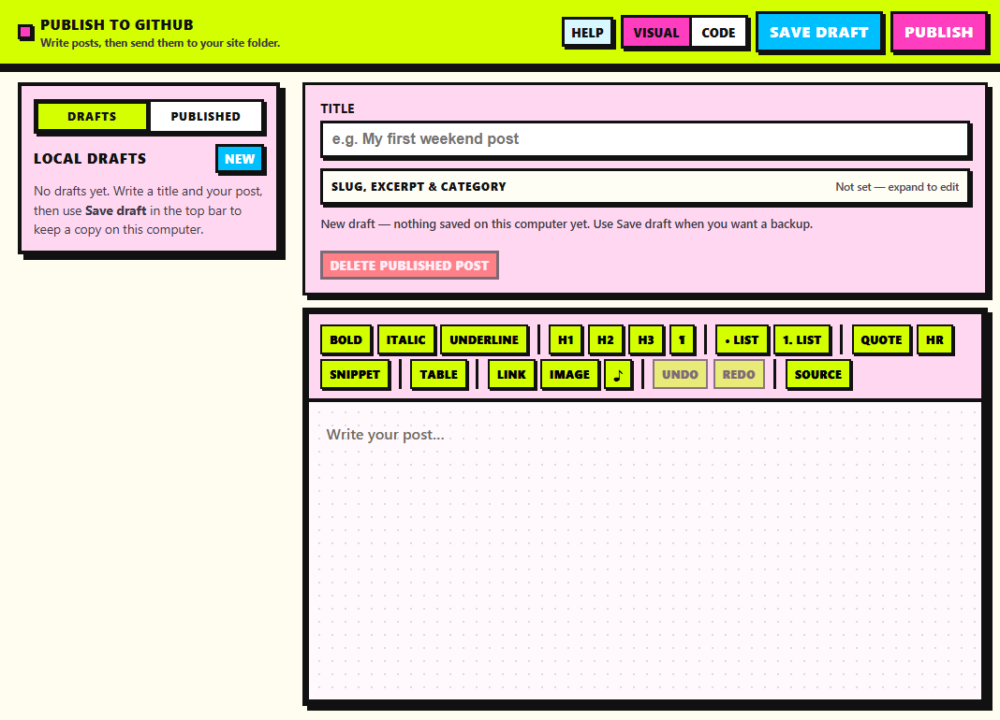
| Step | What happens |
|---|---|
| 1 | Connect GitHub (username, repo, branch, token) — saved in this browser only |
| 2 | Write in Visual or Code mode; Save draft keeps a local backup |
| 3 | Publish creates/updates blog/posts/{slug}.html and updates blog/index.html |
| 4 | First publish bootstraps blog/, styles, and a GitHub Actions workflow |
| 5 | Enable Settings → Pages → GitHub Actions once, then visit your site URL |
The Published sidebar updates immediately after publish or delete (optimistic UI). It reads from the GitHub repo API, not the live Pages URL, so deployment lag does not hide new posts.
You need Node.js (LTS from nodejs.org) once per computer.
install.bat — wait until it finishes.start.bat — keep the window open; the browser opens the editor (usually
http://localhost:5173/).
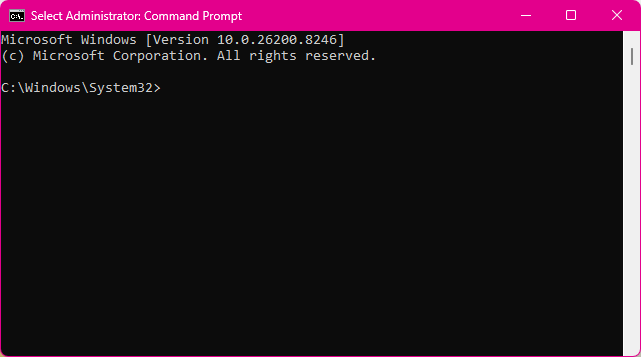
On first launch, the welcome screen asks for GitHub connection details. Use Help in the top bar anytime for token steps, blog layout, and troubleshooting.
To stop: close the browser tab and the start.bat window (or Ctrl+C in that window).
blog/Every publish uses the same structure:
blog/
index.html ← homepage + post cards
style.css
.nojekyll
posts/
my-post.html ← one file per post
.github/workflows/deploy-blog-pages.yml ← added on first publishBundled templates (in the app, not uploaded as a folder):
templates/post-page-template.html — full post pagestemplates/post-card-template.html — cards on the homepagetemplates/index.html — starter homepage designHomepage listing uses marker comments (invisible on the public site):
<!-- BLOG_POSTS_START -->
<!-- BLOG_POSTS_END -->New cards are inserted between these markers (newest first). Code view includes tools to check markers and edit homepage HTML.
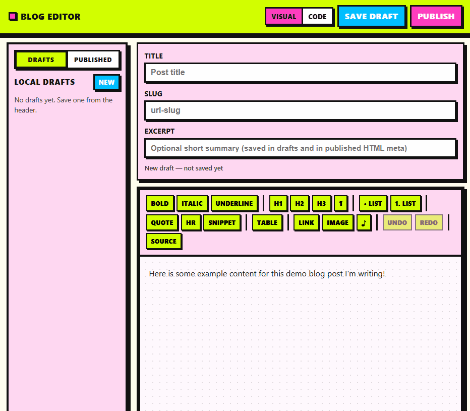
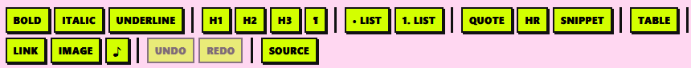
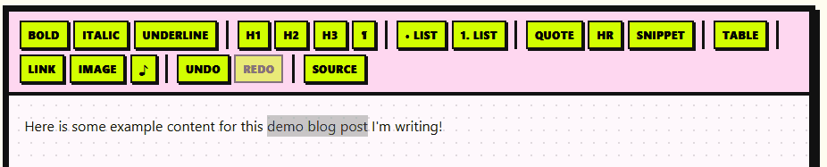
Text formatting
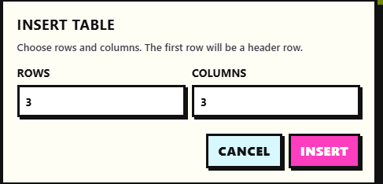
Insert table
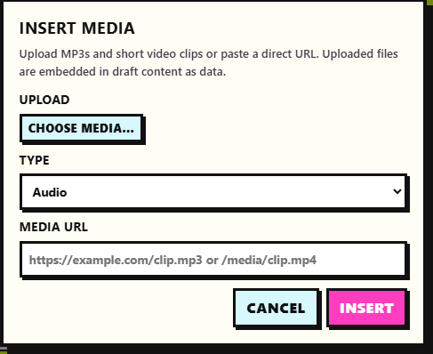
Upload media
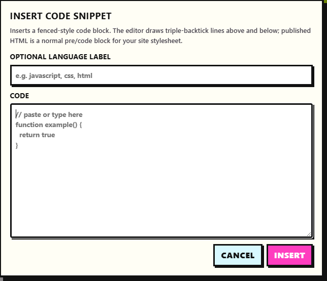
Code snippet
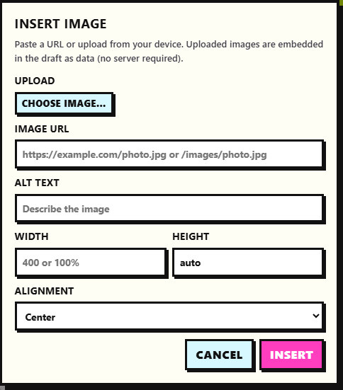
Image
Tables support add/remove rows and columns. Images support URL or file upload (data URL in drafts), alt text,
size, and alignment. Code snippets export as normal <pre><code> blocks.
Under the title: collapsible slug, excerpt, and category. Excerpt and category can appear on
homepage cards and in optional blog-editor:* meta tags for round-trip editing.
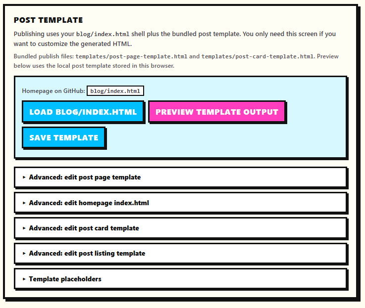
Publishing always uses the bundled post page and card templates. Code view is for preview,
optional local template tweaks, loading blog/index.html from GitHub, and editing homepage/listing
HTML in collapsed Advanced sections. See in-app Help for placeholders and
markers.
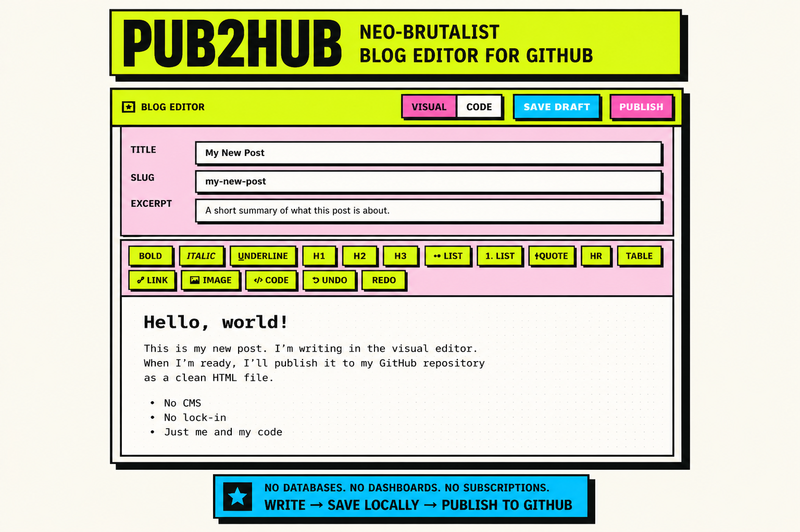
The app will:
blog/ and the Pages workflow on first publishblog/posts/{slug}.html from the bundled post templateblog/index.html, insert or update the post card between markers, and saveOne-time: In the repo on GitHub, open Settings → Pages and set Build and deployment source to GitHub Actions, then run Deploy blog to GitHub Pages under the Actions tab.
Connection settings save to localStorage after a successful publish or
Save connection settings.
Help in the header opens a short, scannable guide:
No account data is sent to a third-party server — only GitHub’s API, using your token from the browser.
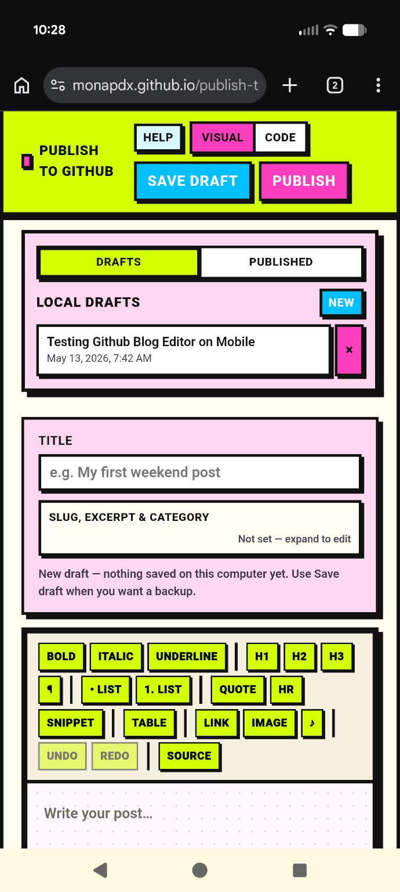
Usable on smaller screens; writing and publishing are easiest on desktop.
npm install
npm run dev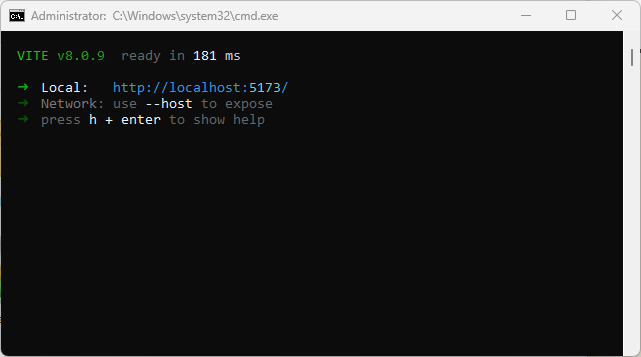
| Script | Purpose |
|---|---|
npm run dev | Local dev server (Vite) |
npm run build | Production build |
npm run preview | Preview production build |
npm run lint | ESLint |
npm test | Vitest (blog index, publish helpers, sanitization, GitHub messages) |
CI runs lint, tests, and build on push/PR (.github/workflows/ci.yml).
Fine-grained (recommended) on the target repo:
Classic alternative: repo scope (ghp_…).
Use the repo owner (your username or org name), not a personal username for an org-owned repo.